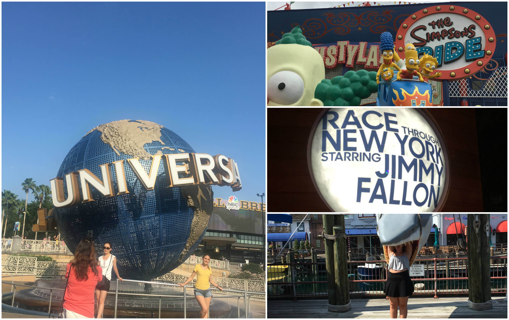

Resan 2017
Skrivet Pre-Gotland
Nu är jag tillbaka på plats i Sverige, bara aningen jetlaggad. Jag har dock ingen tid att slösa då jag ska till Gotland imorgon, och sedan efter det påbörja min flytt till Stockholm. Sista veckan hade jag ingen tid att skriva något här. Vi hade så fullt upp att vi gick upp vid 8/9-tiden och la oss 23-00. Däremellan var det fullt fart hela tiden, nästan inte en lugn stund! Så nu kommer summeringen såhär i efterhand istället.
Skrivet på Gotland

Den sista veckan spenderade vi på Universal Studios i Orlando samt i Washington DC med omnejd tillsammans med Amanda, en gemensam kompis. Universal Studios var indelat i två parker, en med samma namn som hela stället och ett som hette Islands of Adventure. Första besöket skedde på Universal Studios-delen. Där fanns det åkturer från bland annat Harry Potter, The Simpsons, och Transformers. Helt okej nöjespark, 6/10 - jag vart väl inte direkt superimponerad. Sen vilade vi en dag och tog oss därefter till Islands of Adventure, vilken visade sig vara en roligare upplevelse. Åkturerna var mycket bättre och det var allmänt en mycket mer välplanerad park. Dock fick jag otroligt ont i ögonen av 3D-effekterna som fanns på vissa av åkturerna så jag skippade Spiderman och Hulken-åkturerna. Men sen tror jag att vi åkte allt förutom barn-attraktionerna. Parken får 8/10 på nöjesskalan - vilket är bra då jag inte är ett stort fan av just nöjesparker.
Efter parkerna flög vi mot DC! På bokningen stod det att det skulle ta 2 timmar och 30 minuter, men när vi satte oss på flyget sa kaptenen att dagens flygning skulle ta endast 1 timme och 30 minuter. Lustigt nog blev vi försenade med just 1 timme så tidsplanen höll trots allt. Väl framme hämtade Amanda upp oss och vi åkte för att äta middag på Cheesecake Factory. Självfallet åt vi cheesecake till efterrätt! Dagen efter besökte vi hjärtat av DC, eftersom Amandas värdfamilj bor i Vienna tog vi tåget in, vilket tog ungefär en halvtimme. Vi besökte sen National History Museum, The Holocaust Museum, och alla monument som fanns runt om i "centrum". Vi såg även vita huset innan det var dags att åka tillbaka till förorten.
Dag tre i Washington bestod av en utflykt till Mount Vernon, där George Washington bodde. Vi var där medans de hade en War of Independence-reenactment så alla var utklädda vilket var en rolig överraskning! Sen tog vi oss in mot Alexandria för att äta lunch på Chipotle (tacos/burritos kan man säga). Sen åkte vi över från delstaten Virginia (som vi befunnit oss i hela tiden) till Maryland och Emma shoppade det sista på en outlet. Därefter åkte vi till Great Falls Park, främst för att Amanda hade ett möte med sin Au Pair grupp, men vi gick sedan en promenad längs med floden. Vattenfallet som fanns där såg mer ut som en fors eftersom det var högt vatten. Fjärde dagen spenderades tillsammans med Amanda, "en dag på jobbet" kan man väl säga. Vi vek lite tvätt, åkte och handlade lite, sen på eftermiddagen tog vi hand om barnen och åkte med dem på deras aktiviteter. På kvällen åt vi på en lite finare restaurang, jag försökte beställa en 29 dollars stek, men den informerade dem mig efter jag beställt var slut. Så jag fick byta till entrecoten (eller vad det nu blev)!!
Sista dagen i Washington, i USA, på hela resan var vi på jakt efter en foundation(?) åt en av Emmas vänner. Vi åkte runt till flera butiker i jakt på den, och till slut fick vi tag på den. Vi åt frozen yoghurt och åkte sen hem till Amanda för att det var dags att börja packa ihop. Eftersom vi skulle till flygplatsen "Baltimore Washington Airport" som låg en bra bit bort, tog vi en Uber. Tråkigt att behöva säga hejdå, men någon gång måste man väl tillbaks till "verkligheten", eller något.
Flyget hem skedde i två etapper, första var till Island på 6 timmar. Andra var till Arlanda på 3 timmar. Stolarna var väldigt obekväma så det var en inte så njutbar resa. Sen har jag lärt mig nu att resa över natten är en väldigt dålig idé om man inte vill vända sitt dygn. Eftersom jag kanske bara sov knappa två timmar på hela resan (som varade 11+ timmar) så var det galet svårt att hålla sig vaken. Vi kom i alla fall hem utan några missöden.
Snipp snapp snut, nu är resan slut.
Jag håller fortfarande på och smälter hela resan så känner mig inte i ett stadie att reflektera något djupare över det hela, än. Det innebär alltså att den här reseloggen har nått sitt slut.
The End